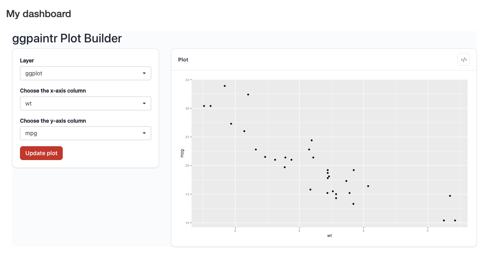

f <- rlang::expr(ggplot(mtcars, aes(x = ppVar("wt"), y = ppVar("mpg"))) + geom_point())
ui <- shiny::fluidPage(
shiny::h3("My dashboard"),
ptr_ui(!!f, "plot1")
)
server <- function(input, output, session) {
ptr_server(!!f, "plot1")
}
shiny::shinyApp(ui, server)10 Multi-Plot Apps
ptr_app() builds exactly one plot per app. To place a ggpaintr plot inside your own app — alongside other UI, several plots at once, controls of your own — you drop down one level to ptr_ui() / ptr_server() and own the shinyApp() shell yourself.
10.1 One plot inside your own app
You write the fluidPage and the server function. Put ptr_ui(formula, id) where the plot’s controls and output should go, and ptr_server(formula, id) in the server with a matching id. ptr_server() namespaces itself — call it bare, never wrapped in your own moduleServer().
Both functions take the formula the same way ptr_app() does: pass the ggplot() call directly, or — to write it once and hand the same formula to both — store it with rlang::expr() and splice it in with !!. (The string form still works as a fallback.)

fluidPage, drawn after one update. Everything ggpaintr emits is namespaced under plot1-.The id ("plot1") is the namespace shared by the UI and the server; they must agree on it. Omitting it (id = NULL) gives bare, un-namespaced ids — fine for a single plot, and the reason namespacing matters is in Chapter 11 § “How input ids are built”.
10.2 Several plots, laid out your way
There is no special grid entry point: tiles are plain Shiny layout. fluidRow() + column() around two ptr_ui() calls gives side-by-side plots; each gets its own ptr_server() call:
ui <- shiny::fluidPage(
shiny::fluidRow(
shiny::column(6, ptr_ui("ggplot(iris, aes(ppVar, Sepal.Length)) + geom_boxplot()", "left")),
shiny::column(6, ptr_ui("ggplot(iris, aes(ppVar, Sepal.Width)) + geom_violin()", "right"))
)
)
server <- function(input, output, session) {
ptr_server("ggplot(iris, aes(ppVar, Sepal.Length)) + geom_boxplot()", "left")
ptr_server("ggplot(iris, aes(ppVar, Sepal.Width)) + geom_violin()", "right")
}
shiny::shinyApp(ui, server)Each plot is fully independent: its own widgets, its own Update plot button, its own generated code.
10.4 When to skip all of this
If one plot and the default chrome are enough, stay at L1 (Chapter 1). If what you actually want is a different layout of the standard pieces — controls left, plot right, code window elsewhere — you may want the bare L3 pieces instead of whole-module embedding: Chapter 12.